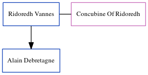

Ridoredh Vannes, the 34 times great-grandfather of Michele Copp (née Phillips), was born in Nantes, Loire-Atlantique, Pays de la Loire, France and had 1 child with Concubine Of Ridoredh: Alain I.
Family Tree

Generated by ged2site. Last updated on Jun 6, 2024